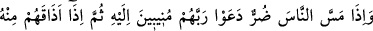
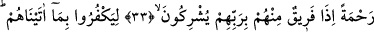
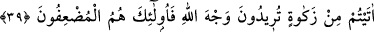
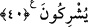

ALLAH
ORTAK KOŞTUKLARINIZDAN
MÜNEZZEHTİR
33. İnsanların başına bir sıkıntı gelince, Rablerine yönelerek O’na yalvarırlar.
Sonra Allah, katından onlara bir rahmet (nîmet ve bolluk) tattırınca, bakarsınız ki
onlardan bir gurup yine Rablerine ortak koşuyorlar.
34. Kendilerine verdiklerimize nankörlük etsinler bakalım! Haydi sefa sürün;
ama yakında bileceksiniz!
35. Yoksa onlara kesin bir delil indirdik de, o delil, müşrik olmalarını mı söylüyor?
36. İnsanlara bir rahmet tattırdığımızda ona sevinirler. Şâyet yaptıklarından
ötürü başlarına bir fenalık gelse hemen ümitsizliğe düşüverirler.
37. Görmediler mi ki Allah, rızkı dilediğine bol bol vermekte, dilediğininkini de
daraltmaktadır. Şüphesiz îmanlı bir kavim için bunda ibretler vardır.
38. O halde sen, akrabaya, yoksula ve yolda kalmışa hakkını ver. Allâh’ın rızâsını
isteyenler için bu, en iyisidir. İşte onlar kurtuluşa erenlerdir.